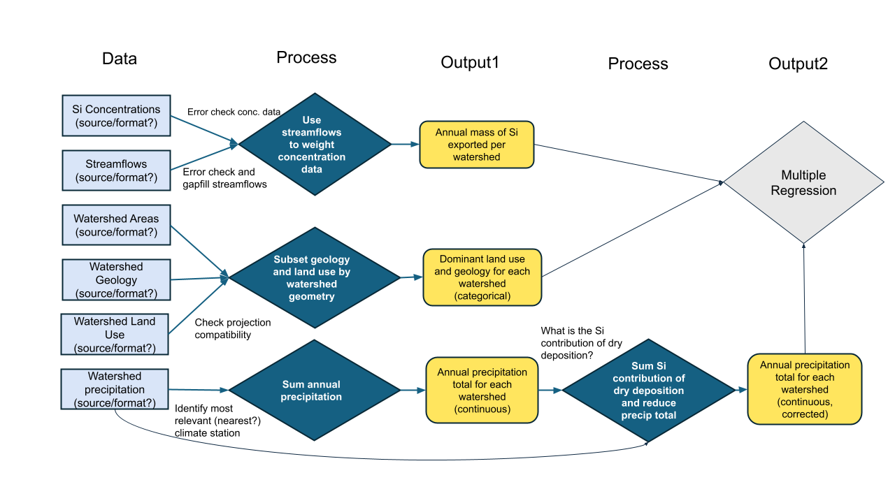
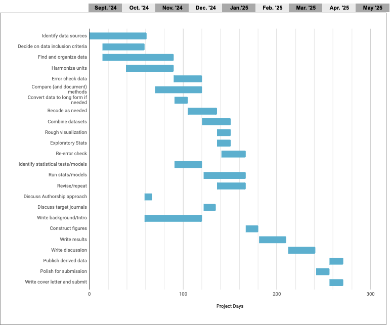
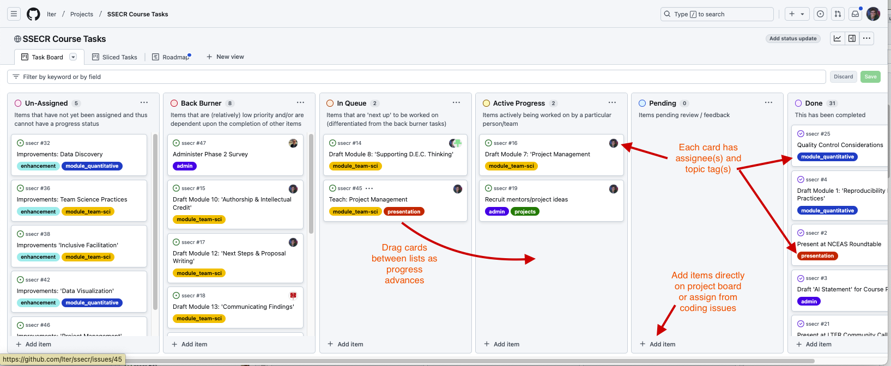
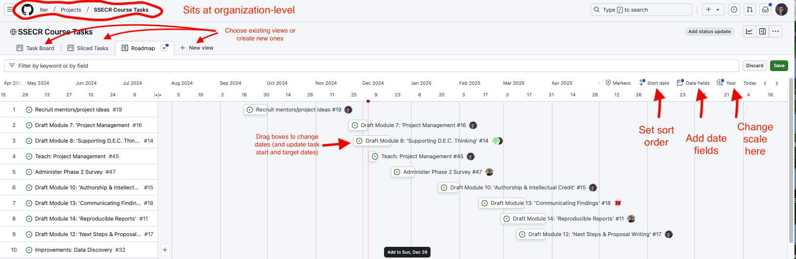
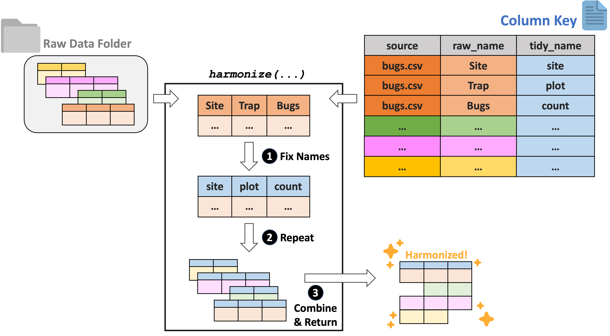
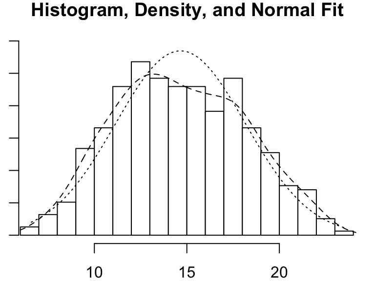

# Load the lterdatasampler package
library(lterdatasampler)
# Load the fiddler crab dataset
data(pie_crab)Project and Code Planning
[Overview Under Construction]
Check back later
Outline Your Analysis
Once the team has settled on a question and specific set of processes to explore or test, it’s worth sketching out the steps in your analysis. By making the inputs, processing, and outputs of each step explicit, you’ll identify needed data sooner and avoid (some) backtracking.
The process of building an explicit analysis description as a team can quickly reveal mismatches in team members’ mental models and uncover hidden assumptions. Making those (often disciplinary) differences visible early can mitigate some of the biggest risks of interdisciplinary research and also offer a way into the most novel insights. A well-structured analysis plan can also be a touchstone to return to throughout the life of your project, keeping the team on-track and avoiding mission creep.

Plan the Work
Once your team goals and the necessary steps are agreed on, it becomes much easier to build a project plan that clarifies the timeline and team member responsibilities. Especially with limited-term projects such as ours, a Gantt chart can be a particularly valuable way to map out project dependencies and responsibilities. With each task arranged on a timeline, it becomes easier to spot potential dependencies that could otherwise hold up the project. With simultaneous tasks stacked vertically, it becomes apparent when the planned workload is unrealistic.
- Before diving into any specific tool, start by making a list of your goal and the steps necessary to get there.
- Place them into an outline in the order they must proceed.
- Some steps cannot start until others are finished, while others can proceed simultaneously.
- Sequential steps get a new number, while steps that can be done in parallel get the same number with different letters.
- Attach an estimated time frame to each step and identify a responsible team member (tentative at this point).
- Arrange the steps in colored bars along a horizontal timeline.
- Use the visualization to assess which steps are likely to be bottlenecks and when the team may be relying too heavily on one individual for mission-critical work.
A robust support infrastructure exists for the project management profession – including formal training and a multitude of (often pricey) apps. But for the job of managing research collaborations, we’ve found that the single most important factor is whether your collaborators will use the system. For that to happen, they must have easy access to it, ideally without setting up a new account and as part of something they already do every day.
For non-coders, we’ve included a Google sheet template of a Gantt chart, pictured below.

But if you’re already working in GitHub or GitLab to collaborate on code, why not take advantage of GitHub’s project management capabilities? In GitHub, issues from your repos can be assigned to projects (which sit at a level above repos), allowing an overarching view of all the tasks associated with a project. Issues can also be created in the project itself. Both kinds of issues can be assigned to individuals, marked with topical tags, and assigned start and due dates. The examples below draw from the repository we are using to organize the first iteration of this course.

Two additional views make it even easier to track overall progress and individual workloads. The “roadmap” view in GitHub functions like an interactive Gantt chart, once start and target dates are assigned to an issue. In the roadmap view, issues can by dragged forward and back in time and the issue’s start or end date will adjust accordingly. The stack of issues can be sorted by start date, target date, topic tags or assigned collaborator.
The “sliced tasks view” also allows each collaborator to see only their own assigned tasks.

Making a Wrangling Plan
Before you start writing your data harmonization and wrangling code, it is a good idea to develop a plan for what data manipulation needs to be done. Just like with visualization, it can be helpful to literally sketch out this plan so that you think through the major points in your data pipeline before beginning to write code that turns out to not be directly related to your core priorities. Consider the discussion below for some leading questions that may help you articulate your group’s plan for your data.
Harmonizing Data
For the purposes of SSECR, we’ll define “harmonization” as the process of combining separate primary data objects into one object. This includes things like synonymizing columns, or changing data format to support combination. This excludes quality control steps–even those that are undertaken before harmonization begins.
Data harmonization is an interesting topic in that it is vital for synthesis projects but only very rarely relevant for primary research. Synthesis projects must reckon with the data choices made by each team of original data collectors. These collectors may or may not have recorded their judgement calls (or indeed, any metadata) but before synthesis work can be meaningfully done these independent datasets must be made comparable to one another and combined.
For tabular data, we recommend using the ltertools R package to perform any needed harmonization. This package relies on a “column key” to translate the original column names into equivalents that apply across all datasets. Users can generate this column key however they would like but Google Sheets is a strong option as it allows multiple synthesis team members to simultaneously work on filling in the needed bits of the key. If you already have a set of files locally, ltertools does offer a begin_key function that creates the first two required columns in the column key.
The column key requires three columns:
- “source” – Name of the raw file
- “raw_name” – Name of all raw columns in that file to be synonymized
- “tidy_name” – New name for each raw column that should be carried to the harmonized data
Note that any raw names either not included in the column key or that lack a tidy name equivalent will be excluded from the final data object. For more information, consult the ltertools package vignette. For convenience, we’re attaching the visual diagram of this method of harmonization from the package vignette.

Wrangling Scope
For the purposes of SSECR, we’ll define “wrangling” as all modifications to a single data object meant to create a single, analysis-ready ‘tidy’ data object. This includes quality control, unit conversions, and data ‘shape’ changes to name a few. Note that attaching ancillary data to your primary data object (e.g., attaching temperature data to a dataset on plant species composition) also falls into this category!
Data wrangling is a huge subject that covers a wide range of topics. In this part of the module, we’ll attempt to touch on a wide range of tools that may prove valuable to your data wrangling efforts. This is certainly non-exhaustive and you’ll likely find new tools that fit your coding style and professional intuition better. However, hopefully the topics covered below provide a nice ‘jumping off’ point to reproducibly prepare your data for analysis and visualization work later in the lifecycle of the project.
To begin, we’ll load the Plum Island Ecosystems fiddler crab dataset we’ve used in other modules.
Exploring the Data
Before beginning any code operations, it’s important to get a sense for the data. Characteristics like the dimensions of the dataset, the column names, and the type of information stored in each column are all crucial pre-requisites to knowing what tools can or should be used on the data.
Checking the data structure is one way of getting a lot of this high-level information.
# Check dataset structure
str(pie_crab)Classes 'tbl_df', 'tbl' and 'data.frame': 392 obs. of 9 variables:
$ date : Date, format: "2016-07-24" "2016-07-24" ...
$ latitude : num 30 30 30 30 30 30 30 30 30 30 ...
$ site : chr "GTM" "GTM" "GTM" "GTM" ...
$ size : num 12.4 14.2 14.5 12.9 12.4 ...
$ air_temp : num 21.8 21.8 21.8 21.8 21.8 ...
$ air_temp_sd : num 6.39 6.39 6.39 6.39 6.39 ...
$ water_temp : num 24.5 24.5 24.5 24.5 24.5 ...
$ water_temp_sd: num 6.12 6.12 6.12 6.12 6.12 ...
$ name : chr "Guana Tolomoto Matanzas NERR" "Guana Tolomoto Matanzas NERR" "Guana Tolomoto Matanzas NERR" "Guana Tolomoto Matanzas NERR" ...For data that are primarily numeric, you may find data summary functions to be valuable. Note that most functions of this type do not provide useful information on text columns so you’ll need to find that information elsewhere.
# Get a simple summary of the data
summary(pie_crab) date latitude site size
Min. :2016-07-24 Min. :30.00 Length:392 Min. : 6.64
1st Qu.:2016-07-28 1st Qu.:34.00 Class :character 1st Qu.:12.02
Median :2016-08-01 Median :39.10 Mode :character Median :14.44
Mean :2016-08-02 Mean :37.69 Mean :14.66
3rd Qu.:2016-08-09 3rd Qu.:41.60 3rd Qu.:17.34
Max. :2016-08-13 Max. :42.70 Max. :23.43
air_temp air_temp_sd water_temp water_temp_sd
Min. :10.29 Min. :6.391 Min. :13.98 Min. :4.838
1st Qu.:12.05 1st Qu.:8.110 1st Qu.:14.33 1st Qu.:6.567
Median :13.93 Median :8.410 Median :17.50 Median :6.998
Mean :15.20 Mean :8.654 Mean :17.65 Mean :7.252
3rd Qu.:18.63 3rd Qu.:9.483 3rd Qu.:20.54 3rd Qu.:7.865
Max. :21.79 Max. :9.965 Max. :24.50 Max. :9.121
name
Length:392
Class :character
Mode :character
For text columns it can sometimes be useful to simply look at the unique entries in a given column and sort them alphabetically for ease of parsing.
# Look at the sites included in the data
sort(unique(pie_crab$site)) [1] "BC" "CC" "CT" "DB" "GTM" "JC" "NB" "NIB" "PIE" "RC" "SI" "VCR"
[13] "ZI" For those of you who think more visually, a histogram can be a nice way of examining numeric data. There are simple histogram functions in the ‘base’ packages of most programming languages but it can sometimes be worth it to use those from special libraries because they can often convey additional detail.
# Load the psych library
library(psych)
# Get the histogram of crab "size" (carapace width in mm)
psych::multi.hist(pie_crab$size)